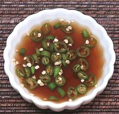

 |
Dip for Bôt ChiênVietnam | ||||
| Makes: Effort: Sched: DoAhead: |
1/2 cup * 5 min Yes |
Various dips are used for Bôt Chiên, many of them too sweet for Western tastes. This dip is typical, except I've cut the sugar in half to make it more savory. | |||
|
|
4 2 1 4 |
T T T |
Soy Sauce Rice Vinegar (1) Sugar Thai Chili (2) |
|